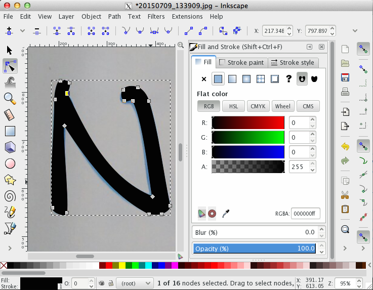
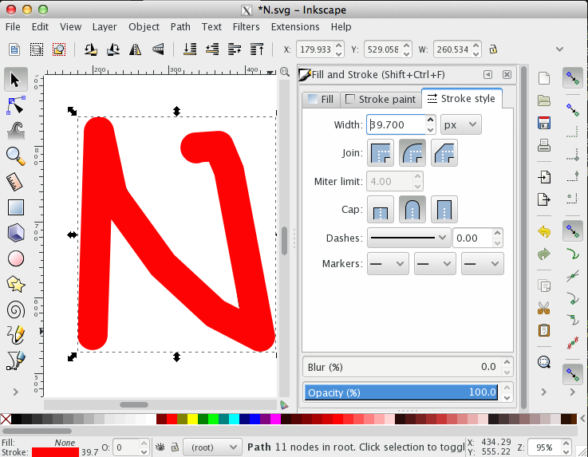
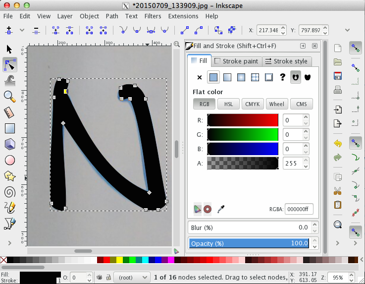
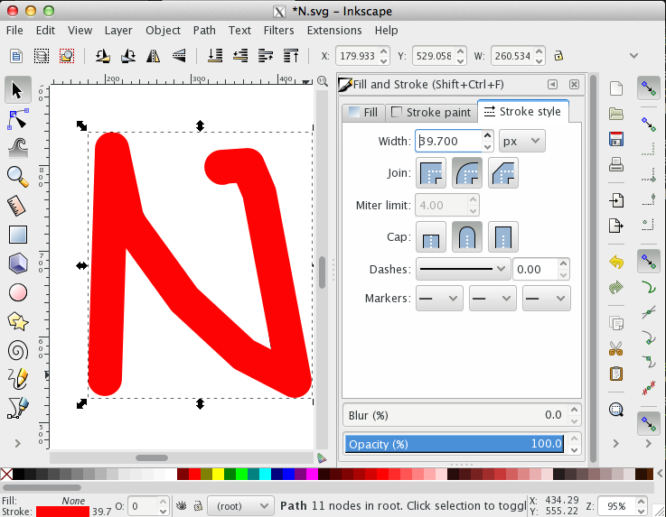

2015/07/10
Animate your signature
SVG path animation with varying stroke width (HTML+CSS)
You might have noticed the animated signature on this homepage. I'll admit, this wasn't my idea, but something I first saw on the 2015 cssconf homepage and I - naturally - wanted that for myself.
I quickly noticed that this isn't as straight forward to create as I thought.
In this tutorial I'll attemp to summarise everything that's necessary to to do this: from creating the SVG using Inkscape, over animating a constant-width stroke based on this amazing tutorial, to a conversation I had with Glen Maddern who gave me the final hints of how to make this work.

Next, use a simple stroke and trace over the centre of the letter. Crank up the path width until the entire letter is covered. Delete the underlying letter and save the new path as an SVG.

If you open these two files in a text editor, you should find a section embedded in <path> ... </path>. This is the bit we need to copy into our HTML file.
It's important to set the style correctly:
fill:none;
fill-rule:evenodd;
stroke:#000000;
stroke-width:40;
stroke-linecap:round;
...In our case, this will become the animation of our mask.
There are a few things, that are important here: Especially if we have multiple letters, we want to group all the paths and assign a mask id to them using
<g style="mask: url(#easyMask);"> ... </g>.
We then need to encapsulate the constant-width path in the according mask environment:
<mask id="easyMask"> ... </mask>.
In order to make sure we draw the mask on top of the signature, we also need to assign z-values in CSS.
I quickly noticed that this isn't as straight forward to create as I thought.
In this tutorial I'll attemp to summarise everything that's necessary to to do this: from creating the SVG using Inkscape, over animating a constant-width stroke based on this amazing tutorial, to a conversation I had with Glen Maddern who gave me the final hints of how to make this work.
Preparing the SVG elements
The way to animating any path that doesn't have a constant stroke width starts with creating it first. An easy way of creating an SVG of a signature is to first draw it on a piece of paper, take a photo, and then use a tool to trace over it. A good and free program to create vector graphics is Inkscape. No matter which program you use, you will normally be able to draw Bezier curves that match the outline of your letters. Fill your letters with the colour of your choice. Save the file as an SVG.

Next, use a simple stroke and trace over the centre of the letter. Crank up the path width until the entire letter is covered. Delete the underlying letter and save the new path as an SVG.

If you open these two files in a text editor, you should find a section embedded in <path> ... </path>. This is the bit we need to copy into our HTML file.
Constant-width stroke animation
The trick to animate a path with constant stroke width is to use a dashed line instead of a solid one. The dashes have to be exactly one path length apart (a value that's easiest found by simply trying out different ones). Then, the offset - the location where the first dash is drawn - can be animated.
It's important to set the style correctly:
fill:none;
fill-rule:evenodd;
stroke:#000000;
stroke-width:40;
stroke-linecap:round;
...In our case, this will become the animation of our mask.
See the Pen yNqLVy by Isabell Kiral-Kornek (@IsaKiko) on CodePen.
Using the animation as a mask
At the moment, it is impossible to animate a path with variable stroke-width. Technically, the stroke of our signature circumscribes it, which means, if we apply the same method as before, we end up with a dash-array circling around our letter. Instead, what we will do is use the animation we just made in order to mask the real signature.There are a few things, that are important here: Especially if we have multiple letters, we want to group all the paths and assign a mask id to them using
<g style="mask: url(#easyMask);"> ... </g>.
We then need to encapsulate the constant-width path in the according mask environment:
<mask id="easyMask"> ... </mask>.
In order to make sure we draw the mask on top of the signature, we also need to assign z-values in CSS.
See the Pen WvKNMe by Isabell Kiral-Kornek (@IsaKiko) on CodePen.
The final version
The actual signature has obviously a much longer path description. When using several letters, you have to make sure that the mask is still only one path. Draw over the letters as you would move a pen without lifting it from the paper. Below is the example from the front page.
See the Pen vOjZeb by Isabell Kiral-Kornek (@IsaKiko) on CodePen.
Click on the rerun button to rewatch the animation.